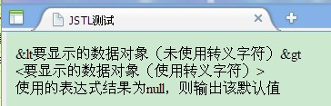
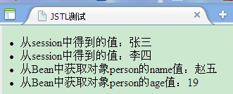
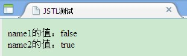
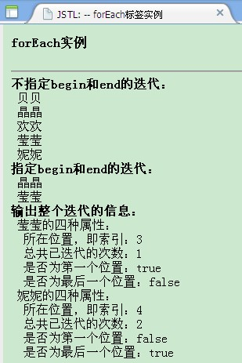
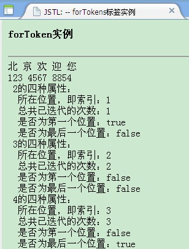
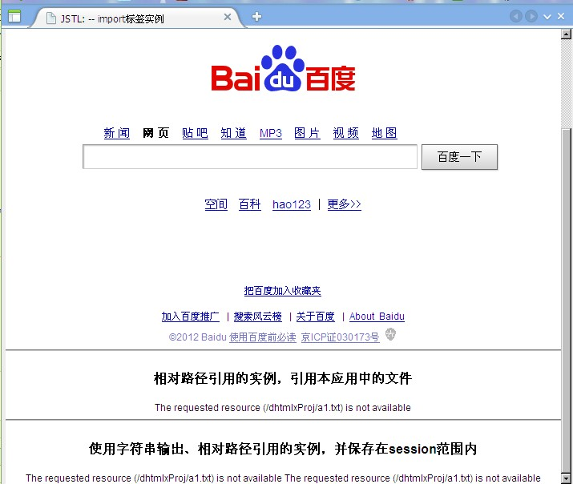
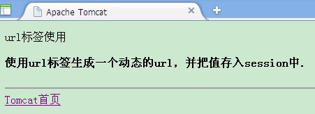

JSTL 核心标签库 使用
JSTL 核心标签库标签共有13个，功能上分为4类：
1.表达式控制标签：out、set、remove、catch
2.流程控制标签：if、choose、when、otherwise
3.循环标签：forEach、forTokens
4.URL操作标签：import、url、redirect
使用标签时，一定要在jsp文件头加入以下代码：
<%@taglib prefix="c" uri="http://java.sun.com/jsp/jstl/core" %>
下面分别对这些标签进行说明：
1. <c:out> 用来显示数据对象（字符串、表达式）的内容或结果
使用Java脚本的方式为：<% out.println("hello") %> <% =表达式 %>
使用JSTL标签：<c:out value="字符串">，例如：
<body>
<c:out value="<要显示的数据对象（未使用转义字符）>" escapeXml="true" default="默认值"></c:out><br/>
<c:out value="<要显示的数据对象（使用转义字符）>" escapeXml="false" default="默认值"></c:out><br/>
<c:out value="${null}" escapeXml="false">使用的表达式结果为null，则输出该默认值</c:out><br/>
</body>
那么网页显示效果为：

2. <c:set> 用于将变量存取于 JSP 范围中或 JavaBean 属性中。下面的例子中假设已经有 Person.java 这个类文件。

<%@ page language="java" import="java.util.*" pageEncoding="gb2312"%>
<%@page contentType="text/html; charset=utf-8" %>
<jsp:useBean id="person" class="lihui.Person"></jsp:useBean>
<%@taglib prefix="c" uri="http://java.sun.com/jsp/jstl/core" %>
<!DOCTYPE HTML PUBLIC "-//W3C//DTD HTML 4.01 Transitional//EN">
<html>
<head>
<title>JSTL测试</title>
</head>
<body>
<c:set value="张三" var="name1" scope="session"></c:set>
<c:set var="name2" scope="session">李四</c:set>
<c:set value="赵五" target="${person}" property="name"></c:set>
<c:set target="${person}" property="age">19</c:set>
<li>从session中得到的值：${sessionScope.name1}</li>
<li>从session中得到的值：${sessionScope.name2}</li>
<li>从Bean中获取对象person的name值：<c:out value="${person.name}"></c:out></li>
<li>从Bean中获取对象person的age值：<c:out value="${person.age}"></c:out></li>
</body>
</html>
一共有四种语法格式，前两种是给jsp的范围变量赋值，后两个是给 javabean 变量赋值
效果如下：

3.<c:remove> 主要用来从指定的 jsp 范围内移除指定的变量。使用类似，下面只给出语法：
<c:remove var="变量名" [scope="page|request|session|application"]></c:remove>
4.<c:catch> 用来处理 JSP 页面中产生的异常，并存储异常信息
<c:catch var="name1">
容易产生异常的代码
</c:catch>
如果抛异常，则异常信息保存在变量 name1 中。
5.<c:if>
<c:if test="条件1" var="name" [scope="page|request|session|application"]></c:remove>
例：
<body>
<c:set value="赵五" target="${person}" property="name"></c:set>
<c:set target="${person}" property="age">19</c:set>
<c:if test="${person.name == '赵武'}" var="name1"></c:if>
<c:out value="name1的值：${name1}"></c:out><br/>
<c:if test="${person.name == '赵五'}" var="name2"></c:if>
<c:out value="name2的值：${name2}"></c:out>
</body>
效果：

6. <c:choose> <c:when> <c:otherwise> 三个标签通常嵌套使用，第一个标签在最外层，最后一个标签在嵌套中只能使用一次
例：
<c:set var="score">85</c:set>
<c:choose>
<c:when test="${score>=90}">
你的成绩为优秀！
</c:when>
<c:when test="${score>=70&&score<90}">
您的成绩为良好!
</c:when>
<c:when test="${score>60&&score<70}">
您的成绩为及格
</c:when>
<c:otherwise>
对不起，您没有通过考试！
</c:otherwise>
</c:choose>
7.<c:forEach>
语法：<c:forEach var="name" items="Collection" varStatus="statusName" begin="begin" end="end" step="step"></c:forEach>
该标签根据循环条件遍历集合 Collection 中的元素。 var 用于存储从集合中取出的元素；items 指定要遍历的集合；varStatus 用于存放集合中元素的信息。varStatus 一共有4种状态属性，下面例子中说明：
 View Code
View Code

1 <%@ page contentType="text/html;charset=GBK" %>
2 <%@page import="java.util.List"%>
3 <%@page import="java.util.ArrayList"%>
4 <%@ taglib prefix="c" uri="http://java.sun.com/jsp/jstl/core" %>
5 <html>
6 <head>
7 <title>JSTL: -- forEach标签实例</title>
8 </head>
9 <body>
10 <h4><c:out value="forEach实例"/></h4>
11 <hr>
12 <%
13 List a=new ArrayList();
14 a.add("贝贝");
15 a.add("晶晶");
16 a.add("欢欢");
17 a.add("莹莹");
18 a.add("妮妮");
19 request.setAttribute("a",a);
20 %>
21 <B><c:out value="不指定begin和end的迭代：" /></B><br>
22 <c:forEach var="fuwa" items="${a}">
23 <c:out value="${fuwa}"/><br>
24 </c:forEach>
25 <B><c:out value="指定begin和end的迭代：" /></B><br>
26 <c:forEach var="fuwa" items="${a}" begin="1" end="3" step="2">
27 <c:out value="${fuwa}" /><br>
28 </c:forEach>
29 <B><c:out value="输出整个迭代的信息：" /></B><br>
30 <c:forEach var="fuwa" items="${a}" begin="3" end="4" step="1" varStatus="s">
31 <c:out value="${fuwa}" />的四种属性：<br>
32 所在位置，即索引：<c:out value="${s.index}" /><br>
33 总共已迭代的次数：<c:out value="${s.count}" /><br>
34 是否为第一个位置：<c:out value="${s.first}" /><br>
35 是否为最后一个位置：<c:out value="${s.last}" /><br>
36 </c:forEach>
37 </body>
38 </html>
显示效果：

8.<c:forTokens> 用于浏览字符串，并根据指定的字符串截取字符串
语法：<c:forTokens items="stringOfTokens" delims="delimiters" [var="name" begin="begin" end="end" step="len" varStatus="statusName"]></c:forTokens>
还是看个例子吧：
View Code
1 <%@ page contentType="text/html;charset=GBK"%>
2 <%@ taglib prefix="c" uri="http://java.sun.com/jsp/jstl/core"%>
3 <html>
4 <head>
5 <title>JSTL: -- forTokens标签实例</title>
6 </head>
7 <body>
8 <h4>
9 <c:out value="forToken实例" />
10 </h4>
11 <hr>
12 <c:forTokens items="北、京、欢、迎、您" delims="、" var="c1">
13 <c:out value="${c1}"></c:out>
14 </c:forTokens>
15 <br>
16 <c:forTokens items="123-4567-8854" delims="-" var="t">
17 <c:out value="${t}"></c:out>
18 </c:forTokens>
19 <br>
20 <c:forTokens items="1*2*3*4*5*6*7" delims="*" begin="1" end="3"
21 var="n" varStatus="s">
22 <c:out value="${n}" />的四种属性：<br>
23 所在位置，即索引：<c:out value="${s.index}" />
24 <br>
25 总共已迭代的次数：<c:out value="${s.count}" />
26 <br>
27 是否为第一个位置：<c:out value="${s.first}" />
28 <br>
29 是否为最后一个位置：<c:out value="${s.last}" />
30 <br>
31 </c:forTokens>
32 </body>
33 </html>
显示结果：

9.URL 操作标签
（1）<c:import> 把其他静态或动态文件包含到 JSP 页面。与<jsp:include>的区别是后者只能包含同一个web应用中的文件，前者可以包含其他web应用中的文件，甚至是网络上的资源。
语法：<c:import url="url" [context="context"] [value="value"] [scope="..."] [charEncoding="encoding"]></c:import>
<c:import url="url" varReader="name" [context="context"][charEncoding="encoding"]></c:import>
看个例子：
View Code
1 <%@ page contentType="text/html;charset=GBK"%>
2 <%@ taglib prefix="c" uri="http://java.sun.com/jsp/jstl/core"%>
3 <html>
4 <head>
5 <title>JSTL: -- import标签实例</title>
6 </head>
7 <body>
8 <h4>
9 <c:out value="import实例" />
10 </h4>
11 <hr>
12 <h4>
13 <c:out value="绝对路径引用的实例" />
14 </h4>
15 <c:catch var="error1">
16 <c:import url="http://www.baidu.com" />
17 </c:catch>
18 <c:out value="${error1}"></c:out>
19 <hr>
20 <h4>
21 <c:out value="相对路径引用的实例，引用本应用中的文件" />
22 </h4>
23 <c:catch>
24 <c:import url="a1.txt" charEncoding="gbk" />
25 </c:catch>
26 <hr>
27 <h4>
28 <c:out value="使用字符串输出、相对路径引用的实例，并保存在session范围内" />
29 </h4>
30 <c:catch var="error3">
31 <c:import var="myurl" url="a1.txt" scope="session" charEncoding="gbk"></c:import>
32 <c:out value="${myurl}"></c:out>
33 <c:out value="${myurl}" />
34 </c:catch>
35 <c:out value="${error3}"></c:out>
36 </body>
37 </html>
显示结果：

URL路径有个绝对路径和相对路径。相对路径：<c:import url="a.txt"/>那么，a.txt必须与当前文件放在同一个文件目录下。如果以"/"开头，表示存放在应用程序的根目录下，如Tomcat应用程序的根目录文件夹为 webapps。导入该文件夹下的 b.txt 的编写方式： <c:import url="/b.txt">。如果要访问webapps管理文件夹中的其他Web应用，就要用context属性。例如访问demoProj下的index.jsp，则：<c:import url="/index.jsp" context="/demoProj"/>.
（2）<c:redirect> 该标签用来实现请求的重定向。例如，对用户输入的用户名和密码进行验证，不成功则重定向到登录页面。或者实现Web应用不同模块之间的衔接
语法：<c:redirect url="url" [context="context"]/>
或：<c:redirect url="url" [context="context"]>
<c:param name="name1" value="value1">
</c:redirect>
看个例子：
1 <%@ page contentType="text/html;charset=GBK"%>
2 <%@ taglib prefix="c" uri="http://java.sun.com/jsp/jstl/core"%>
3 <c:redirect url="http://127.0.0.1:8080">
4 <c:param name="uname">lihui</c:param>
5 <c:param name="password">11111</c:param>
6 </c:redirect>
则运行后，页面跳转为：http://127.0.0.1:8080/?uname=lihui&password=11111
（3）<c:url> 用于动态生成一个 String 类型的URL，可以同上个标签共同使用，也可以使用HTML的<a>标签实验超链接。
语法：<c:url value="value" [var="name"] [scope="..."] [context="context"]>
<c:param name="name1" value="value1">
</c:url>
或：<c:url value="value" [var="name"] [scope="..."] [context="context"]/>
看个例子：
View Code
1 <%@ page contentType="text/html;charset=GBK"%>
2 <%@ taglib prefix="c" uri="http://java.sun.com/jsp/jstl/core"%>
3 <c:out value="url标签使用"></c:out>
4 <h4>
5 使用url标签生成一个动态的url，并把值存入session中.
6 </h4>
7 <hr>
8 <c:url value="http://127.0.0.1:8080" var="url" scope="session">
9 </c:url>
10 <a href="${url}">Tomcat首页</a>
显示：
